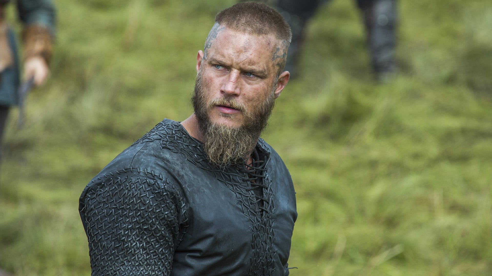
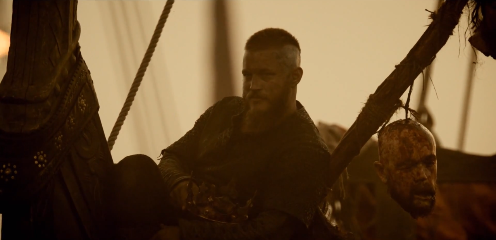
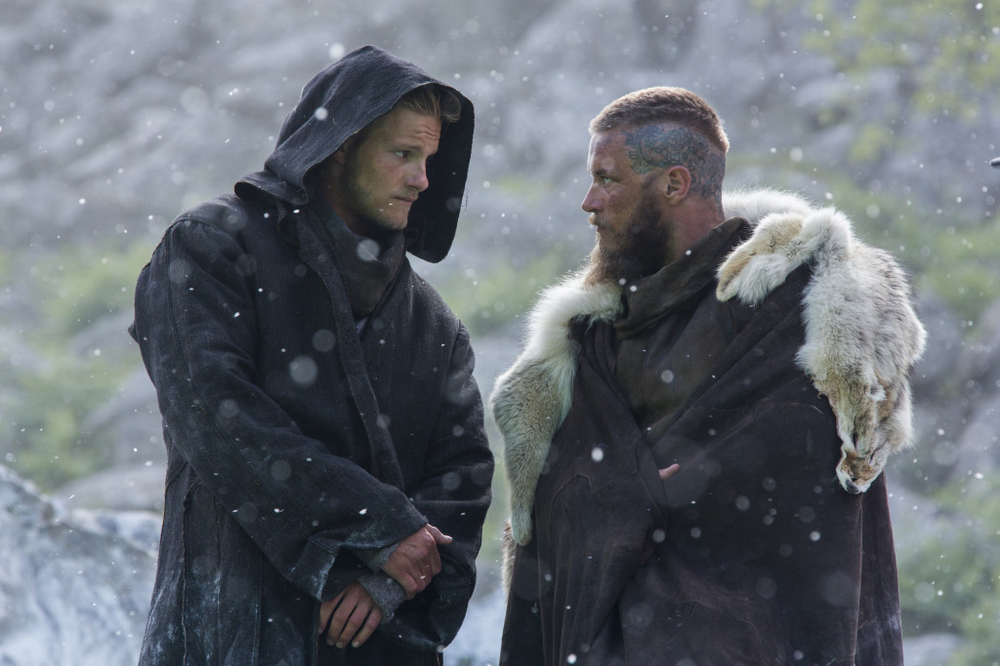

Once merely a farmer and a frequent member of the sea raiders along with his fellow Norsemen, Ragnar had since risen to power, beginning with his successful and infamous raids of the west, later becaming Earl and eventually King of Kattegat and of the Danish people. Ragnar's adventuring spirit brought him into conflict with powerful men who try to block his ascent, from farmer to king, to untold heights. He identified with the god Odin, who traded his eye for knowledge, and believed himself to be descended from him. Ragnar was married twice. To the shield-maiden Lagertha whom he was deeply in love with and vice-versa. He had two kids with her, a son, and a daughter. He also had an unfortunate miscarriage with her, which lead to his second marriage to the Princess Aslaug. He had four sons with her.

Ragnar Lothbrok is a fierce Viking warrior who believes his destiny is preordained and lies beyond his homeland. He is not content to live within the confines of his village and is able to think longterm about his future. He has a lust for the glory of battle, but also has a curiosity and seeks to learn more about the world. He becomes frustrated by the conservative leadership of his local chieftan, Earl Haraldson, and wants to sail across the ocean to the west to seek his fortune. He receives navigation devices from a wanderer that are crucial in his ability to travel west at sea.
He is very skilled in battle and is lethal with an ax, sword, and spear, taking on multiple opponents at a time. Erik, a mighty warrior, is his good friend as is Floki, a skilled craftsman who is capable of building new, faster longships.
He often travels and fights alongside his larger brother Rollo, who eventually becomes resentful and feels he is overshadowed by his fearsome, courageous brother.
He brings a Christian monk named Athelstan back from one of his raids and takes him as a slave, although he treats him well and trusts him with his family. He becomes a very good friend of Ragnar. After Athelstan's death he gets really upset.

The best two raids were those in Northumbria king Aelle's kingdom where he for the first time in the vikings history sailed west. The second raid was in the kingdom of Frankia. After the death of Athelstan, Ragnar and his warriors travel to Frankia which they arrive in the city of Paris (city), during the siege Ragnar told Floki that he wishes Athelstan was here with them.
Ragnar decides to attack Paris again. The real reason for him wanting to attack Paris is because he wants to kill his brother Rollo, who has betrayed everyone by turning to the Franks. Ragnar and Floki move the longships over to the other side of the river and attack Paris from behind, but Rollo manages to repulse this attempt with Paris's navy.
Defeated, Ragnar's forces return to Kattegat, and Ragnar mysteriously leaves the city and his family. After about 10 years he finally comes back to Kattegat. His intention is to sail West again. He summons some worriors and his son Ivar and sails to Wessex. There after he surrenders his self to king Eckbert he tells his son Ivar to return to Kattegat and tell his brothers to prepare avenge against Eckbert. Ragnar is handed to king Aelle where he gets killed.

Personality
Despite his qualities all pointing him as a fearsome warrior and bloodthirsty conqueror, Ragnar is a devoted family man as well. He is a fine husband to his first wife, Lagertha not as much so to his second wife Aslaug who cheats on him with a wanderer causing Siggy to die while saving the neglected children of Ragnar's. While a great warrior he is an even better father to his children; whom he adores. Particularly his son Bjorn, whom he dotes on and grooms as his successor. Ragnar also cherishes his brother Rollo, though his love for his brother blinds him to his resentment for him. The brothers eventually face off in a violent war as Rollo betrays Ragnar time and time again. Ragnar deeply cherishes the lives of his friends even when they hurt him and kill one another.
 Info taken from Wikia
Info taken from Wikia